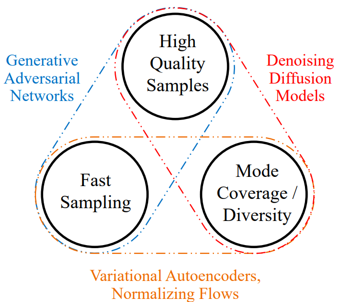

Modèles de diffusion#
Dans ce cours, on te présente les modèles de diffusion, aussi appelés diffusion models. Ces modèles ont été introduits en 2020 dans l’article Denoising Diffusion Probabilistic Models. Depuis, ils sont largement utilisés pour la génération d’images, et ce, de manière très efficace. Ils sont performants et faciles à guider, mais ils ont un gros défaut : ils sont très lents. Ce cours s’inspire du CVPR 2022 Tutorial et du blogpost. Les figures utilisées dans ce notebook proviennent de ces deux sources.
Problème principal des modèles de diffusion#
Comme expliqué précédemment, les processus de diffusion et de dénoising bénéficient d’un grand nombre d’étapes. Chaque étape de dénoising nécessite un forward du réseau U-Net. Si on a 1000 étapes de diffusion, on doit appeler le réseau 1000 fois pour générer une seule image.
On voit tout de suite le problème des modèles de diffusion : ils sont très très lents.

Figure extraite de l’article.
Les diffusion models sont beaucoup plus puissants que les GANs, les VAEs et les normalizing flows pour la génération d’images. C’est donc ces modèles qu’on aimerait utiliser en priorité.
Il est donc nécessaire de trouver des méthodes pour accélérer ces modèles de diffusion via diverses techniques. Ce cours ne détaille pas les techniques existantes pour accélérer ces modèles, mais le CVPR 2022 Tutorial couvre très bien le sujet (même si depuis, de nouvelles techniques ont été introduites). À titre informatif, on peut maintenant générer des images de qualité en une dizaine d’étapes (contre 1000 auparavant).
Les modèles de diffusion sont un gros sujet de recherche en ce moment, et il reste encore beaucoup de problèmes à résoudre. En voici quelques-uns :
Pourquoi les diffusion models sont-ils si performants par rapport aux VAE et aux normalizing flows ? Devrait-on rediriger les efforts de recherche sur ces alternatives maintenant qu’on a appris beaucoup de choses sur la diffusion ?
Est-il possible de passer à une seule étape pour générer des images ?
L’architecture de diffusion peut-elle aider pour des applications discriminatives ?
L’architecture U-Net est-elle vraiment le meilleur choix pour la diffusion ?
Peut-on appliquer les diffusion models à d’autres types de données (comme du texte, par exemple) ?
Comment ça fonctionne ?#
Les diffusion models fonctionnent en deux étapes principales : l’ajout de bruit (diffusion process) et l’enlèvement du bruit (reverse process ou denoising process). Ces deux étapes sont itératives, ce qui signifie qu’on ajoute et qu’on enlève le bruit progressivement.
Première étape : le processus de diffusion#
La première étape d’un modèle de diffusion consiste à prendre une image d’un dataset. Ce dataset est représenté par une distribution de probabilité complexe. Le processus de diffusion ajoute du bruit gaussien à l’image de manière itérative pour réduire progressivement sa complexité jusqu’à obtenir une simple distribution gaussienne. La figure suivante montre le processus de diffusion :
On peut voir comment la distribution évolue (de moins en moins complexe) :
Le processus de diffusion détruit progressivement la structure de l’image d’entrée.
Le processus de diffusion se déroule en plusieurs étapes appelées diffusion steps. À chaque étape, on ajoute une quantité prédéterminée de bruit gaussien à l’image. Plus il y a d’étapes, moins de bruit est ajouté à chaque fois. En pratique, plus il y a d’étapes, plus le modèle est stable et les images produites sont de meilleure qualité, mais cela augmente le temps de calcul. Souvent, on choisit un grand nombre d’étapes (1000 dans l’article original).
Deuxième étape : le processus inverse#
Mais à quoi ça sert de bruiter une image ? En fait, le processus de diffusion permet de générer des données d’entraînement pour le processus inverse. L’idée du processus inverse est d’apprendre à passer de la distribution gaussienne (obtenue avec la diffusion) aux images originales. On veut récupérer l’image à partir du bruit gaussien de la dernière étape du processus de diffusion. Ainsi, on pourra aussi générer de nouvelles images à partir d’un échantillon de la distribution gaussienne.
Note : On peut noter une certaine similarité avec les normalizing flows ou les variational autoencoders.
Pour chaque étape de dénoising, on utilise un réseau de neurones qui prend en entrée l’image à l’étape \(t\) et l’étape de diffusion \(t\) et qui a pour objectif de prédire le bruit gaussien (\(\mu\) et \(\sigma^2\)) ajouté à l’image lors de l’étape \(t-1 \Rightarrow t\).
Note : Prédire le bruit permet en fait de prédire l’image à l’étape \(t-1\).
Note 2 : Le réseau utilisé est le même à chaque étape, il n’y a pas un réseau différent par étape de diffusion.
Le modèle utilisé est généralement un U-Net. Pour en savoir plus sur l’architecture U-Net, tu peux consulter le cours 3 sur les réseaux convolutifs. En pratique, pour les modèles très puissants (comme Stable Diffusion), une variante du U-Net incorporant l’architecture des transformers est utilisée.
Les modèles de diffusion sont-ils des VAE hiérarchiques ?#
Comme dit précédemment, on peut voir les diffusion models comme des VAE ou des normalizing flows. Regardons l’analogie possible avec un VAE, et plus précisément un hierarchical VAE. Un hierarchical VAE est un VAE qui a plusieurs étapes de génération (decoder) d’images.
Pour notre diffusion model, le diffusion process correspondrait à l’encoder du VAE, tandis que le reverse process correspondrait aux multiples étapes hiérarchiques du VAE. En pratique, il y a quelques différences notables :
L’encoder est fixe (non entraînable) pour le modèle de diffusion, il s’agit d’un ajout de bruit.
L’espace latent a la même dimension que l’image d’entrée (ce qui n’est pas le cas pour un VAE).
Le modèle utilisé pour la diffusion est le même à chaque étape de diffusion. Pour un hierarchical VAE, on a un modèle différent à chaque étape.
Le même genre d’analogie peut être faite avec un normalizing flow. Je t’invite à consulter le CVPR 2022 Tutorial pour en apprendre plus.